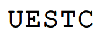
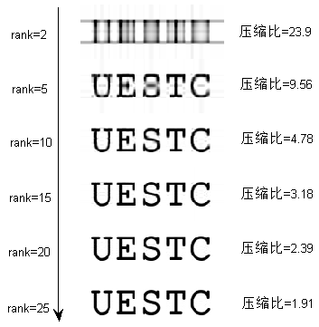

SVD在图像处理中的基本应用
本文是我2013年左右写的课程作业，非常 Old School，很详细证明了 SVD 分解定理，归档于此。
矩阵的分解是矩阵理论中的一个重要组成部分。通过将原始矩阵拆分成具有不同特性的矩阵的乘积，不仅能揭示其潜在的属性，加深人们对一个矩阵的理解，还有助于实现各种高效的算法。在众多矩阵分解算法中，矩阵的奇异值分解（Singular Value Decomposition，SVD）占有相当重要的地位。SVD不仅能够将任意矩阵分解为两个单位正交阵以及一个广义对角阵，而且分解后的每个矩阵因子都有明确而重要的数学意义。下面，将给出奇异值的定义和奇异值分解定理，以及它的证明。
奇异值的定义：
设\(A \in C_r^{m\times n}\)，\(A^HA\)的特征值为\[\lambda_1 \ge \lambda_2 \ge \cdots \ge \lambda_r \ge \lambda_{r+1}=\cdots = \lambda_n = 0,\]
则称\(\sigma_i = \sqrt{{\lambda_i}}(i=1,2,\cdots ,r)\)为矩阵\(A\)的正奇异值。
奇异值分解定理：
设\(A \in C_r^{m\times n}\)，存在\(m\)阶酉矩阵\(U\)和\(n\)阶酉矩阵\(V\)，使得\[A=U\Sigma V^H,\]其中\(\Sigma\)是对角元为\(A\)的\(r\)个正奇异值的广义对角矩阵，酉矩阵\(U\)的每一列称为\(A\)的左奇异向量，\(V\)的每一列称为\(A\)的右奇异向量。
为证明奇异值分解定理，首先证明以下三个引理。
引理1: \(rank(A)=rank(A^HA)=rank(AA^H)\)
证明
当\(Ax=0\)时，\({A^H}(Ax) = 0\)必然成立。另一方面，当\(A^HAx = 0\)时，\({x^H}{A^H}Ax = {(Ax)^H}Ax = \left\| {Ax} \right\|^2 = 0\)成立，此时\(Ax\)为0。于是\(A^HAx\)与\(Ax\)的零空间(解空间)相同，设其维数为\(k(k < n)\)。
又因为\(A\)与\(A^HA\)的列数都\(n\)，所以它们的秩也相等\[rank(A^HA)=rank(A)=n-k\]同理，利用左零空间的一致性，很容易证得\(AA^H\)与\(A\)的秩也相同。
引理2: 矩阵\(A^HA\)和\(AA^H\)的所有特征值都是非负的。
证明
将\(A^HA\)左乘\(x^H\)，右乘\(x\)，得\({x^H}{A^H}Ax = \left\| {Ax} \right\|^2 \ge 0\)，满足半正定矩阵的定义，又因为半正定矩阵具有非负的特征值，所以\(A^HA\)的特征值都是非负的。接着，设\(B=A^H\)，应用上面的结论，得到\(B^HB=(A^H)^HA^H=AA^H\)的特征值也非负。
引理3: 设\(rank(A)=r\)，矩阵\(A^HA\)和\(AA^H\)具有相同的\(r\)个非零特征值。
证明
设\(\lambda_i\)为\(A^HA\)的一个非零特征值，\(v_i\)为其对应的一个特征向量\[A^HAv_i=\lambda_i v_i,\]将其左乘\(A\)，得\[AA^HAv_i=\lambda_i Av_i\]设\(y_i = Av_i\)，
因为若\(Av_i\)为0，则\(A^HAv_i=\lambda_i v_i\)为0，又因为\(v_i\)非零，所以只可能\(\lambda_i\)为0，这与\(\lambda_i\)不为0的条件矛盾。所以此时非零向量\(y_i\)为\(AA^H\)对应特征值\(\lambda_i\)的一个特征向量，所以\(A^HA\)与\(AA^H\)的非零特征值集合相同
\(AA^H\)与\(A^HA\)都是Hermitian矩阵，它们都能进行酉对角化，使其与一个实对角矩阵酉相似。因为相似矩阵的特征值和秩相同，而这个对角矩阵具有\(r\)个非零对角元，所以\(AA^H\)与\(A^HA\)都有\(r\)个非零特征值，即所有非零特征值的代数重数之和为\(r\)。又因为Hermitian矩阵的代数重数等于几何重数，所以其任意一个特征值\(\lambda_i\)所对应的特征空间的维数\(r_i\)都小等于\(r\)。
接着，再证明对于某个非零特征值，其在\(A^HA\)与\(AA^H\)上的重数相同。设\[v_i=\left( {\begin{array}{*{20}{c}}
{{x_1}}&{{x_2}}& \cdots &{{x_{{r_i}}}}
\end{array}} \right)(r_i \le r)\]为\(A^HA\)一个非零特征值\(\lambda_i\)对应的特征空间的一组基向量，当通过左乘\(A\)将它们变换为\(AA^H\)的特征向量后，新的特征空间的秩满足\[rank(Av_i) \le \min (rank(A),rank({v_i})) = \min (r, r_i) = r_i = rank({v_i})，\]同理，通过对称性易得\[rank(v_i) \le rank({Av_i})\]所以，每个非零特征值的重数相同。
综上，矩阵\(A^HA\)和\(AA^H\)具有相同的\(r\)个非零特征值。
接下来，证明矩阵的奇异值分解定理。
证明：
设\(A \in C_r^{m\times n}\)，\[V_1 = \left( {\begin{array}{*{20}{c}}
{{v_1}}&{{v_2}}& \cdots &{{v_r}}
\end{array}} \right)\]为\(A^HA\)的\(r\)个正特征值\(\sigma_i^2\)对应的一组标准正交的特征向量（\(\sigma_i\)为\(A\)的第\(i\)个奇异值），满足\[A^HAv_i = \sigma_i^2 v_i (i=1,2,\cdots ,r)\]
将上式左乘\(v_i^H\)，得\[v_i^HA^HAv_i={\left\| {A{v_i}} \right\|^2}=\sigma_i^2\]
等式两边同时开根号，得\(\left\| {A{v_i}} \right\|=\sigma_i\)。
再令\[Y_1 = \left( {{y_1},{y_2}, \cdots ,{y_r}} \right) = A{V_1} = \left( {A{v_1},A{v_2}, \cdots ,A{v_r}} \right)\]由引理3的证明过程可知，\(Y_1\)的各列为\(AA^H\)的特征空间的一组基，而且\[Y_1^HY_1=V_1^HA^HAV_1=\left( {\begin{array}{*{20}{c}}
{\sigma _1^2}&{}&0\\
{}& \ddots &{}\\
0&{}&{\sigma _r^2}
\end{array}} \right)=D\]由此可知\(y_i(i=1,2,\cdots, r)\)是一组正交向量，且它们的长度为\(\sqrt {{\sigma _i}^2} = {\sigma _i}\)。将它们单位化，得到各列相互单位正交的\(U_1\)：\[{U_1} = {Y_1}D^{-1}\]综合以上我们可以得到如下关系\[AV_1=U_1D\]这与SVD的最终形式已经很接近了，接下来只需要将\(U_1\)与\(AA^H\)的零特征值对应的单位正交的特征向量组\(U_2\)结合成一个正交矩阵\[U = \left( {\begin{array}{*{20}{c}}
{{U_1}}&{{U_2}}
\end{array}} \right),\]类似地将\(V_1\)扩充成正交矩阵\[V = \left( {\begin{array}{*{20}{c}}
{{V_1}}&{{V_2}}
\end{array}} \right),\]并令\[\Sigma = \left( {\begin{array}{*{20}{c}}
D&O\\
O&O
\end{array}} \right)\]我们得到\[\begin{array}{l}
AV=U\Sigma\\
A=U\Sigma V^H
\end{array}\]这就得到了矩阵的奇异值分解。
奇异值分解的意义
SVD后得到的矩阵\(U,V,\Sigma\)都有各自明确的数学意义，下面对其进行说明。
对于任意一个矩阵\(A\in C_r^{m\times n}\)，它都隐含了四个空间，分别为:
- 行空间（Row space）：由矩阵所有行向量张成的空间。
- 列空间（Column space）：由矩阵所有列向量张成的空间。
- 零空间（Null space）：方程\(Ax=0\)的所有解构成的空间。
- 左零空间（Left null space）：方程\(A^Hx=0\)的所有解构成的空间。
其中，零空间又称\(A\)作为线性方程组的系数矩阵时的解空间，\(A\)作为线性变换矩阵时的核（Kernel），列空间也叫这个线性变换的值域（Range）。根据线性代数的基本定理（Fundamental theorem of linear algebra），这四个空间之间满足这样的关系：
- 行空间与列空间的维数都为\(r\)。
- 零空间的维数为\(n-r\)。
- 左零空间的维数为\(m-r\)。
- 行空间与零空间互为正交补空间。
- 列空间与左零空间互为正交补空间。
奇异值分解将这四个空间以一种优美的方式联系到了一起。首先，引理1的证明过程可知，矩阵\(A\)与\(A^HA\)有相同的零空间，因为\(A^HA\)的零空间与它的零特征值对应的特征空间也是相同的，所以\(V\)的第\(r+1\)至\(n\)列构成了\(A\)的零空间的一组单位正交基。
有\(V\)的单位正交性可以推知，它的第1至\(r\)列所张成的空间与第\(r+1\)至\(n\)列张成的空间互为正交补空间，根据正交补的唯一性与线性代数基本定理，\(V\)的第1至\(r\)列构成了\(A\)的行空间的一组单位正交基。
同理，\(U\)的第1至\(r\)列构成了\(A\)的列空间的一组单位正交基，第\(r+1\)至\(m\)列构成了\(A\)的左零空间的一组单位正交基。此外，根据奇异值分解定理，\(U\)与\(V\)的前\(r\)列（设为\(U_1\)和\(V_1\)）之间有这样的关系：
\[AV_1=DU_1(D=diag(\sigma_1,\sigma_2,\cdots ,\sigma_r))\]这样，SVD不仅同时得到了一个矩阵所隐含的四个基本空间的单位正交基，而且让行空间与列空间的基经由一个简单的线性变换联系到了一起。
奇异值分解在图像处理中的应用
SVD在数值计算，文本挖掘等领域都起着重要的作用。下面将介绍其在图像处理领域的基本应用：图像压缩与图像表征。
奇异值分解与图像压缩
数字图像可以看做是一个元素值为对应位置像素灰度值的二维矩阵。随着相关技术的发展，现代数码相机已经能拍摄千万像素级别的照片，因此图像矩阵一般而言尺寸很大。但又因图像中有大量色彩接近的区域，即像素间的相关性较强，所以可想而知这个数据矩阵具有一定的冗余度。
这样的冗余可以通过矩阵的秩来衡量：秩较高的图像矩阵各列之间的相关程度越低，秩较低的图像矩阵各列之间相互依赖较为严重。考虑下图所示的纵向灰度渐变图像（假设图像的灰度值被归一化至\([0,1]\)）它由一个列向量\(u=[0,0.1,0.2,\cdots ,0.9]\)右乘一个长度为10的全1行向量\(v^H\)得来。
图像矩阵为：\[uv^H=\left( {\begin{array}{*{20}{c}}
0&0& \cdots &0\\
{0.1}&{0.1}& \cdots &{0.1}\\
{0.2}&{0.2}& \cdots &{0.2}\\
{\begin{array}{*{20}{c}}
\vdots \\
0.9
\end{array}}&{\begin{array}{*{20}{c}}
\vdots \\
0.9
\end{array}}&{\begin{array}{*{20}{c}}
{}\\
\cdots
\end{array}}&{\begin{array}{*{20}{c}}
\vdots \\
0.9
\end{array}}
\end{array}} \right)\]
显然，这个矩阵的秩为1，它的每一行都可用除全0行外的其他行乘以一个倍数得到。因此，保留这个矩阵的全部信息只需要\(u,v\)两个向量共20个数即可，剩余的80个矩阵元素都是冗余数据，如此压缩后的图像，获得了相当可观的压缩比：\[CR=\frac{20}{100}=0.2\]当然，这是一种极端的情况，更一般的问题是：对于一个图像矩阵，如何在一定的评判标准之下获得它的低秩的最优近似，而SVD为这一问题提供了解决方案。
将SVD改写成外积展开（Outer product expansion）的形式：
\[
\begin{array}{l}
A = U\Sigma {V^H} = \left( {{u_1},{u_2}, \cdots ,{u_m}} \right)\left( {\begin{array}{*{20}{c}}
{{\sigma _1}}&{}&{}&O\\
{}& \ddots &{}&{}\\
{}&{}&{{\sigma _r}}&{}\\
O&{}&{}&O
\end{array}} \right)\left( \begin{array}{l}
{v_1}^H\\
{v_2}^H\\
\vdots \\
{v_n}^H
\end{array} \right)\\
= \sum\limits_{i = 1}^r {{\sigma _i}{u_i}{v_i}^H}
\end{array}
\]
在写成求和式以后，SVD仅剩下奇异值非零的前\(r\)项对应的\(u_i\)与\(v_i\)的外积，而剩下的外积项其实是冗余的数据，对\(A\)的构成没有任何贡献。很容易看出，上图的矩阵仅有一个非零特征值。
于是很自然地，我们可以对任意的图像做SVD，舍去它的零奇异值对应的奇异向量，从而实现了它的低秩近似。但是，由于噪声的影响以及图像内容的复杂性，现实中的图像矩阵往往是（行，列）满秩的，它们的非零奇异值数目等于行数或者列数，简单地舍去多余的奇异向量对图像数据压缩没有任何作用。
虽然图像中相似度较强的区域在严格意义上而言是线性无关的，但它们却能被看做是近似地线性相关的，这一事实将导致很小的奇异值的产生，因为这种由像素间微小差异所导致的线性无关对于图像整体表征而言并不重要，所以，我们可以舍去SVD外积展开式中\(\sigma_i\)较小的\(k(0 < k < r)\)项，得到一个\(r-k\)阶的矩阵，将这个矩阵作为原图像的低秩近似。然而，这是一个好的近似吗？
为了说明这一问题，下面首先证明一幅图像在Frobenius范数下最优的秩1近似就是SVD外积展开式中最大奇异值对应的项。
对于一个矩阵\(A \in C_r^{m\times n}\)，最优化问题\[\begin{array}{l}
O = \min {\left\| {A - {A_1}} \right\|_F}\\
{\bf{s}}.{\bf{t}}.\;\;rank{\rm{(}}{{\rm{A}}_1}{\rm{) = 1}}
\end{array}\]在\(A_1=\sigma_1 u_1v_1^H\)时取最小值，其中\(\sigma_1\)是\(A\)的最大奇异值，\(u_1,v_1\)为它对应的左，右奇异向量，\({\left\| {\;}\bullet {\;}\right\|_F}\)为矩阵的Frobenius范数。
证明：
将\(A\)进行奇异值分解，得\(A=U\Sigma V^H\)，将其带入目标函数：
\[
\begin{array}{l}
{\left\| {A - {A_1}} \right\|_F}\\
{\rm{ = }}{\left\| {U\Sigma {V^H} - {A_1}} \right\|_F}
\end{array}
\]
由于Frobenius范数的酉不变性，上式可化为
\[
\begin{array}{l}
{\left\| {U\Sigma {V^H} - {A_1}} \right\|_F}\\
= {\left\| {\Sigma - {U^H}{A_1}V} \right\|_F}
\end{array}
\]
因为\(A_1\)的秩为1，所以\(U^HA_1V\)可以表示为\(\alpha xy^H\)，其中\(x,y\)分别为\(C^M,C^N\)中的单位向量，带入得
\[
\begin{array}{l}
{\left\| {\Sigma - {U^H}{A_1}V} \right\|_F}\\
= {\left\| {\Sigma - \alpha x{y^H}} \right\|_F}
\end{array}
\]
利用性质\({\left\| X \right\|_F^2} = tr({X^H}X)\)，以及\(tr(XY)=tr(YX)\)将求Frobenius范数化为求矩阵的迹
\[
\begin{array}{*{20}{l}}
{{{\left\| {\Sigma - \alpha x{y^H}} \right\|}_F^2}}\\
{ = tr[{{(\Sigma - \alpha x{y^H})}^H}(\Sigma - \alpha x{y^H})]}\\
{ = tr({\Sigma ^H}\Sigma - {\Sigma ^H}\alpha x{y^H} - \alpha y{x^H}\Sigma + {\alpha ^2}y{y^H})}\\
{ = tr({\Sigma ^H}\Sigma ) + {\alpha ^2} - 2\alpha tr[{\Sigma ^H}{\mathop{\rm Re}\nolimits} (x{y^H})]}\\
{ = {{\left\| \Sigma \right\|}_F^2} + {\alpha ^2} - 2\alpha \sum\limits_{i = 1}^r {{\sigma _i}{\mathop{\rm Re}\nolimits} ({x_i}{y_i}^*)} }
\end{array}
\]
考察上式中的\({\sum\limits_{i = 1}^r {{\sigma _i}{\mathop{\rm Re}\nolimits} ({x_i}{y_i}^*)} }\)，对其进行不等式放大
\[
\begin{array}{l}
\sum\limits_{i = 1}^r {{\sigma _i}{\mathop{\rm Re}\nolimits} ({x_i}{y_i}^*)} \le \sum\limits_{i = 1}^r {{\sigma _i}\left\lvert {{x_i}{y_i}^*} \right\rvert} \le \sum\limits_{i = 1}^r {{\sigma _i}\left\lvert {{x_i}} \right\rvert\left\lvert {{y_i}^*} \right\rvert} \\
\le {\sigma _1}\sum\limits_{i = 1}^r {\left\lvert {{x_i}} \right\rvert\left\lvert {{y_i}} \right\rvert} = {\sigma _1}(\tilde x,\tilde y)
\end{array}
\]
其中，\(\tilde x = \left( {\left\lvert {{x_1}} \right\rvert,\left\lvert {{x_2}} \right\rvert, \cdots ,\left\lvert {{x_r}} \right\rvert} \right),\tilde y = \left( {\left\lvert {{y_1}} \right\rvert,\left\lvert {{y_2}} \right\rvert, \cdots ,\left\lvert {{y_r}} \right\rvert} \right)\)，\(( \bullet , \bullet )\)表示\(C^r\)空间的向量内积。根据Cauchy-Schwartz不等式，有
\[
\begin{array}{l}
{\sigma _1}(\tilde x,\tilde y) \le {\sigma _1}\left\lvert {\tilde x} \right\rvert\left\lvert {\tilde y} \right\rvert\\
\le {\sigma _1}\left\lvert x \right\rvert\left\lvert y \right\rvert = {\sigma _1}
\end{array}
\]
综上，得到\(\left\| {A - {A_1}} \right\|_F^2\)的下界
\[
\begin{array}{l}
{\left\| {A - {A_1}} \right\|_F^2}\\
= {\left\| \Sigma \right\|_F^2} + {\alpha ^2} - 2\alpha \sum\limits_{i = 1}^r {{\sigma _i}{\rm{Re}}({x_i}{y_i}^*)} \\
\ge {\left\| \Sigma \right\|_F^2} + {\alpha ^2} - 2\alpha {\sigma _1}\\
= {\left\| \Sigma \right\|_F^2} + {(\alpha - {\sigma _1})^2} - {\sigma _1}^2
\end{array}
\]
当\(\alpha = \sigma_1\)时这个下界取得最小值\({\left\| \Sigma \right\|_F^2} - {\sigma _1}^2\)，而这个最小值在\(x\)与\(y\)都等于对应空间中的\(e_1=(1,0,\cdots,0)^T\)时取到，这时有
\[
{A_1} = \alpha Ux{y^H}{V^H} = \alpha {u_1}{v_1}^H
\]
在实际应用中，常通过一种迭代n次求秩1近似的贪婪算法来获得矩阵\(A\)的秩k近似。算法流程如下
1) 求矩阵\(A\)的最优秩1近似\(A_1\)
2) 获得残差矩阵\(E_1 = A - A_1\)
3) 求\(E_1\)的最优秩1近似\(A_2\)
4) 求残差矩阵\(E_2 = E_1 - A_2\)
5) 迭代求k次近似，获得最终的结果 \(\hat A = \sum\limits_{i = 1}^n{A_i}\)
Lawson和Hanson证明了，这种算法得到的近似矩阵是矩阵的最优秩k近似，很容易看出这个最优秩k近似，正是SVD的外积展开式中的前k项和。因为\(E_1 = A - \sigma _1u_1v_1^H = \sum\limits_{i = 2}^r{{\sigma _i}{u_i}{v_i}^H}\)，所以第二轮迭代得到的秩1近似\(A_2\)为\(\sigma_2 u_2v_2^H\)，以此类推，\(A_k=\sigma_k u_kv_k^H\)，最终得到
\[
\hat A = \sum\limits_{i = 1}^k{{\sigma _k}{u_k}{v_k}^H}
\]
综上，矩阵SVD外积展开式的前k项和，就是它的最优k秩近似。下面给出一个具体的图像压缩的例子，原始图像如下图所示，该图像的尺寸为\(66 \times 176\)秩为31。

压缩后的图像如下图所示。

奇异值分解与图像表征
SVD在图像处理中更重要的应用是图像表征，所谓图像表征（Image representation）指的是为图像数据选取某种基向量，使得图像在这组基下能展现出各种有用的特性。例如，离散傅里叶变换就是一种常见的图像表征方法，这种变换所对应的基是一组相互正交离散复指数函数，它能有效提取出图像缓变部分对应的低频分量以及图像细节所对应的高频分量。SVD的左奇异向量组也能构成一种强有力的图像表征，这种表征方式又称为主成分分析（Principle Component Analysis，PCA）。
假设10个2维的零均值的样本数据，如下表所示。
| \(a_1\) | \(a_2\) | \(a_3\) | \(a_4\) | \(a_5\) | \(a_6\) | \(a_7\) | \(a_8\) | \(a_9\) | \(a_{10}\) | |
|---|---|---|---|---|---|---|---|---|---|---|
| \(x\) | -0.01 | 0.30 | -1.32 | -0.42 | 0.00 | 1.08 | 2.42 | 1.12 | 0.05 | 1.47 |
| \(y\) | -0.31 | -0.28 | -1.43 | -0.57 | 0.60 | 0.42 | 1.99 | 0.03 | 0.63 | 1.74 |
将这些数据点画在\(xy\)平面上，得到下图，从图中可以看出，这些样本点大致分布在一条过原点直线的周围。若每个\(xy\)对都表示某两个物理量在同一时刻的取值，那么我们可以猜想，这两个物理量可能具有线性关系。现在的问题是，如何计算出这条直线，或者从更一般的意义来说，如何找到一组零均值的\(n\)维数据变化最剧烈的那些方向呢？

首先考虑一个方向的情况。假定样本矩阵\(X \in R^{m \times n}\)，它的第\(i(i=1,2,\cdots,n)\)列\(x_i\)表示第\(i\)个\(m\)维样本，样本总数为\(n\)个，均值为0：
\[
\begin{array}{l}
X = \left( {{x_1},{x_2}, \cdots ,{x_n}} \right),{x_i} \in {R^m}\\
\sum\limits_{i = 1}^n {{x_i} = 0\;}
\end{array}
\]
将这些样本投影到某个方向的单位向量\(u\)上，如果\(u\)的方向与样本变化最剧烈的方向相同，那么投影后的各样本向量在\(u\)方向的长度\(u^TX\)的模的平方和\(u^TXX^Tu\)将取到最大值。于是，我们的问题变成了如下的最优化问题：
\[
\begin{array}{*{20}{l}}
{O = \max uX{X^T}u}\\
{{\bf{s}}.{\bf{t}}.\;\;{u^T}u = 1}
\end{array}
\]
又因为\(XX^T\)是一个对称矩阵，所以可对它进行正交对角化：\(X{X^T} = {Q^T}\Lambda Q\)，于是，我们有
\[
{u^T}X{X^T}u = {u^T}{Q^T}\Lambda Qu = {y^T}\Lambda y
\]
由于正交变换是保内积的，所以\(y^Ty=1\)。将上式展开，有
\[
{y^T}\Lambda y = \sum\limits_{i = 1}^n {{y_i}^2{\lambda _i}} \le {\lambda _1}\sum\limits_{i = 1}^n {{y_i}^2 = {\lambda _1}}
\]
其中\(\lambda_1\)是\(XX^T\)的最大特征值（假设\(\Lambda = diag({\lambda _1},{\lambda _2}, \cdots ,{\lambda _n})\)中的特征值按降序排列），且当\(y=(1,0,\cdots,0)\)时等号成立。这个时候\(u\)是特征向量矩阵\(Q\)的第一列，即\(\lambda_1\)对应的特征向量。上述性质即是Rayleigh-Ritz定理在实数域的情况，换言之，当\(u\)为样本矩阵\(X\)的最大奇异值对应的左奇异向量时，样本在\(u\)方向的投影的平方和最大，为最大奇异值的平方。类似地，如果我们想找到样本的\(k(k=1,2,..,n)\)个变化最显著的方向，根据Rayleigh-Ritz定理的思想，易得这\(k\)个方向对应着\(X\)的前\(k\)个左奇异向量。
由于这\(k\)个相互正交的向量很好地体现了数据分布的主要趋势，所以能够作为表征数据的一组良好的基向量，它们又称为这组样本的主成分（Principle Component），假设\(k=rank(X)\)，用部分SVD公式表达某个样本数据\(x_j\)在主成分\(u_1,u_2,\cdots,u_k\)下的展开，有
\[
\begin{array}{l}
X = \left( {{u_1},{u_2}, \cdots ,{u_k}} \right)\Sigma {V^T} = \left( {{u_1},{u_2}, \cdots ,{u_k}} \right)C\\
\Leftrightarrow \left( {{x_1},{x_2}, \cdots ,{x_n}} \right) = \left( {{u_1},{u_2}, \cdots ,{u_k}} \right)\left( {\begin{array}{*{20}{c}}
{{c_{11}}}& \ldots &{{c_{1n}}}\\
\vdots & \ddots & \vdots \\
{{c_{k1}}}& \cdots &{{c_{kn}}}
\end{array}} \right)\\
\Leftrightarrow {x_j} = \sum\limits_{i = 1}^k {{u_i}{c_{ij}}} \;\;\;(j = 1,2, \cdots ,n)
\end{array}
\]
在实际应用中，选取的主成分个数\(k\)往往远小于原始数据的维数\(n\)，这样一来，我们就获得了数据的一个更为紧凑的表征形式。我们可以求出表中的数据的第一主成分\(u_1 = {\left( { - 0.74, - 0.67} \right)^T}\)，其对应的奇异值为4.63，将它的平方除以样本个数并开根号，得到投影后样本向量长度的均方根为1.38，上图中的红色箭头就代表了\(u_1\)的方向和样本投影的均方根长度。
在图像处理，尤其是人脸识别领域中，样本矩阵\(X\)的每一列都是一个拉伸成列的图像，假设图像大小是\(256 \times 256\)像素，它对应的向量维数就是65536，随着样本数目的增多，如此高维的数据对于数据存储以及各类算法的运行速度都是一个挑战。然而，相较数万维的图像样本，样本总数一般而言要小得多。假设一个人脸识别系统共有50名用户，每名用户采集10副样本图像，则总样本数为500，它们构成的样本矩阵将是十分“细长”的，即\(X \in R^{65536 \times 500}\)，根据奇异值分解的性质，这个矩阵最多仅有500个非零的奇异值，也就是说，最多只有500个主成分的方向上样本的变化的均方长度大于零，在其它方向上所有样本都没有偏移。
所以，我们可以假定当前用户的所有样本都分布在一个500维的相对低维的空间中，该空间的基向量就是样本矩阵的前500个主成分，当我们读取一副待识别的图片后，就将其投影到这个低维的空间中，并使用某种度量法则对其进行类别判定，最终完成识别功能。
有趣（但并不令人吃惊）的是，如果我们将这些主成分（在这个例子中，即一个65536维的奇异向量）重新还原为图片时，这幅图片像极了一副人脸。所以在模式识别中，这种算法又称为特征脸（Eigenface）
。作为本文的结束，下图展示了一个特征脸的例子，样本总数为4，选取其前4个主成分并恢复成图像，样本中的人脸采集自我的本科时的同学们。
参考文献
Strang, G., Introduction to linear algebra. 2003: Wellesley Cambridge Pr.
Lawson, C.L. and R.J. Hanson, Solving least squares problems. Vol. 15. 1995: SIAM.
Turk, M. and A. Pentland, Eigenfaces for recognition. Journal of cognitive neuroscience, 1991. 3(1): p. 71--86.
黄廷祝, 钟守铭与李正良, 矩阵理论. 2003.